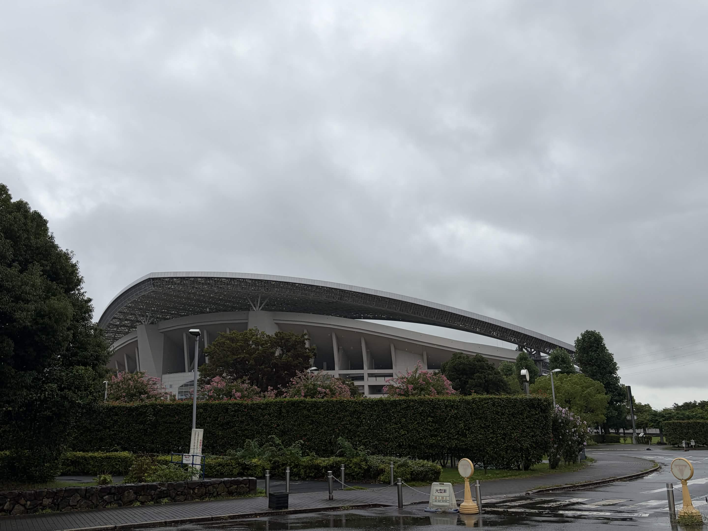

歴史・文教都市

文教都市として育まれた学びの気風、レッズと歩むサッカー文化、江戸時代から続くうなぎの味。埼玉県さいたま市浦和区を紹介します。
中山道の宿場町として栄えた浦和は、明治4年の廃藩置県で埼玉県庁が置かれ、 学びの街として発展しました。今も「文教都市」と呼ばれるのは、 市内に学校や文化施設が集まっているからです。 また、浦和レッズで全国的に有名で、ホームゲームの日は駅前の商店街にある スポーツバーでは、赤いユニフォーム姿の人で埋め尽くされます。さらに江戸時代から続く 「うなぎの街」でもあり、老舗の名店が今も連なります。
中山道六十九次のうち江戸から数えて4番目の宿「浦和宿」として栄え、 明治以降は埼玉県の県庁所在地になりました。旧浦和市役所の周辺には 今も学校が集まり、住宅街の中に調神社や玉蔵院といった古い社寺が残っています。
浦和レッドダイヤモンズの本拠地として、駅前の商店街や飲食店も レッズカラーで彩られます。ホームゲームの日は、駅から埼玉スタジアムまで ユニフォーム姿のサポーターが列をつくります。
かつて見沼田んぼをはじめ湿地が広がっていた浦和では、良質なうなぎが 豊富に獲れたことから、うなぎ料理が名物として発展しました。 今も老舗の蒲焼店が軒を連ねています。
歴史、サッカー、グルメ、街歩き、アクセス。5つのページで浦和を紹介しています。